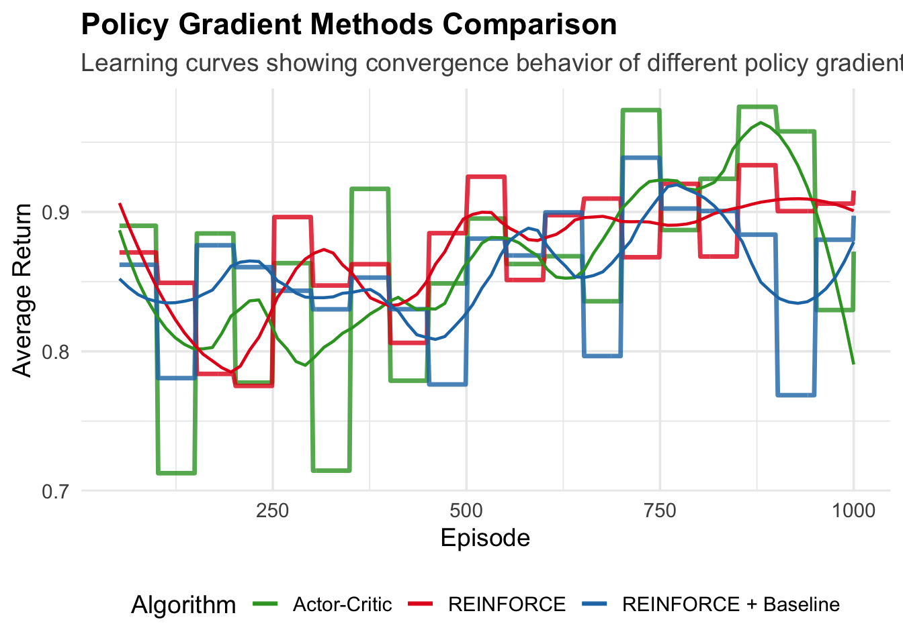
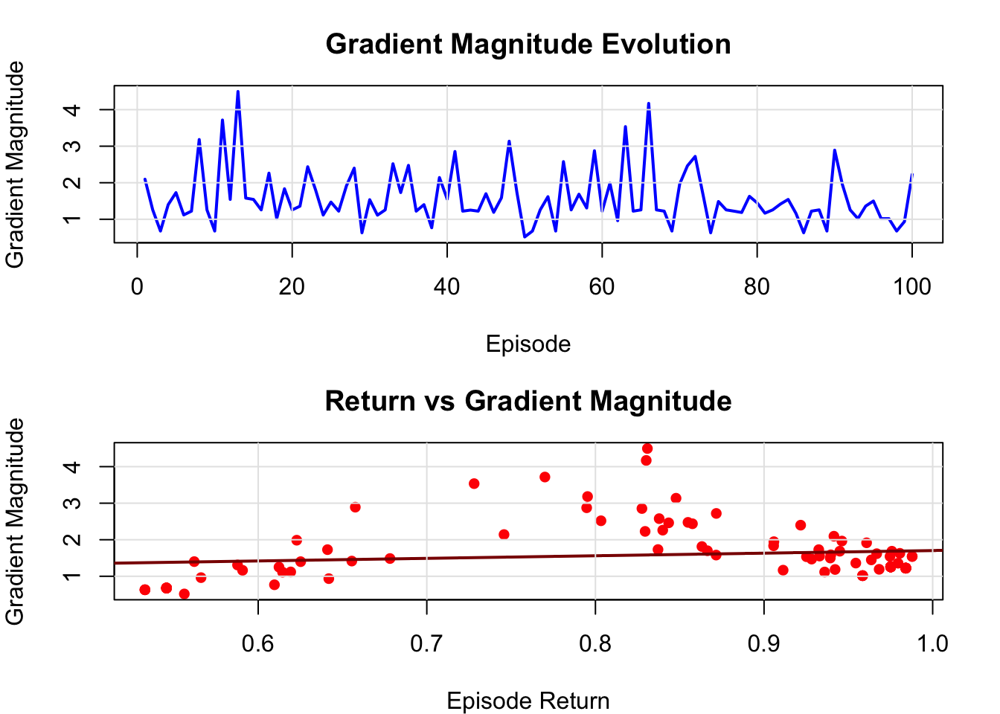

Chapter 10 Dyna-Q+: Enhanced Exploration in Integrated Learning and Planning
10.1 Introduction
While Dyna successfully bridges model-free and model-based reinforcement learning, it carries an inherent assumption that can limit its effectiveness in changing environments: that the world remains static. When an agent has learned to navigate one version of an environment, what happens if the rules suddenly change? Standard Dyna may find itself stuck, continuing to plan based on outdated information while failing to adequately explore the new reality.
Dyna-Q+, introduced by Sutton (1990) alongside the original Dyna framework, addresses this limitation through a deceptively simple yet powerful mechanism: it rewards curiosity. By providing exploration bonuses for state-action pairs that haven’t been tried recently, Dyna-Q+ maintains a healthy skepticism about its model’s continued accuracy. This approach proves particularly valuable in non-stationary environments where adaptation speed can mean the difference between success and failure.
The enhancement might seem minor—just an additional term in the reward calculation—but its implications run deep. Dyna-Q+ acknowledges that in a changing world, forgetting can be as important as remembering, and that an agent’s confidence in its model should decay over time unless continually refreshed by recent experience.
10.2 Theoretical Framework
10.2.1 The Exploration Bonus Mechanism
Dyna-Q+ modifies the planning phase of standard Dyna by augmenting rewards with an exploration bonus based on the time elapsed since each state-action pair was last visited. The core insight lies in treating the passage of time as information: the longer an agent hasn’t verified a particular transition, the less confident it should be about that transition’s current validity.
For each state-action pair \((s,a)\), we maintain a timestamp \(\\tau(s,a)\) recording when it was last experienced. During planning, instead of using the stored reward \(\\hat{R}(s,a)\) directly, we calculate an augmented reward:
\[r_{augmented} = \hat{R}(s,a) + \kappa \sqrt{t - \tau(s,a)}\]
where \(t\) represents the current time step, and \(\\kappa\) is a parameter controlling the strength of the exploration bonus. The square root function provides a diminishing bonus that grows with time but at a decreasing rate, reflecting the intuition that uncertainty about a transition increases with time but not linearly.
10.2.2 Complete Dyna-Q+ Algorithm
The full algorithm extends standard Dyna with minimal modifications. For each real experience tuple \((s, a, r, s')\):
Direct Learning: \[Q(s,a) \leftarrow Q(s,a) + \alpha \left[ r + \gamma \max_{a'} Q(s', a') - Q(s,a) \right]\]
Model and Timestamp Updates: \[\hat{T}(s,a) \leftarrow s'\]\[\hat{R}(s,a) \leftarrow r\]\[\tau(s,a) \leftarrow t\]
Planning Phase (repeat \(n\) times): \[s_{plan} \leftarrow \text{random previously visited state}\]
\[a_{plan} \leftarrow \text{random action previously taken in } s_{plan}\]
\[r_{plan} \leftarrow \hat{R}(s_{plan},a_{plan}) + \kappa \sqrt{t - \tau(s_{plan},a_{plan})}\]
\[s'_{plan} \leftarrow \hat{T}(s_{plan},a_{plan})\]
\[Q(s_{plan},a_{plan}) \leftarrow Q(s_{plan},a_{plan}) + \alpha \left[ r_{plan} + \gamma \max_{a'} Q(s'_{plan}, a') - Q(s_{plan},a_{plan}) \right]\]
10.2.3 Convergence and Stability
The theoretical properties of Dyna-Q+ are more complex than those of standard Dyna due to the non-stationary nature of the augmented rewards. In stationary environments, the exploration bonuses for frequently visited state-action pairs will remain small, and convergence properties approach those of standard Dyna. However, the algorithm sacrifices some theoretical guarantees about convergence to optimal policies in exchange for improved adaptability.
The parameter \(\\kappa\) requires careful tuning. Too small, and the exploration bonus becomes negligible, reducing Dyna-Q+ to standard Dyna. Too large, and the algorithm may exhibit excessive exploration even in stable environments, potentially degrading performance. The square root scaling helps moderate this trade-off by providing significant bonuses for truly neglected state-action pairs while keeping bonuses manageable for recently visited ones.
10.3 Implementation in R
Building on our previous Dyna implementation, we extend the framework to include timestamp tracking and exploration bonuses.
10.3.1 Environment Setup
We’ll use the same 10-state environment as before, but we’ll also create scenarios with environmental changes to demonstrate Dyna-Q+’s adaptive capabilities:
# Environment parameters (same as before)
n_states <- 10
n_actions <- 2
gamma <- 0.9
terminal_state <- n_states
# Transition and reward models
set.seed(42)
transition_model <- array(0, dim = c(n_states, n_actions, n_states))
reward_model <- array(0, dim = c(n_states, n_actions, n_states))
for (s in 1:(n_states - 1)) {
transition_model[s, 1, s + 1] <- 0.9
transition_model[s, 1, sample(1:n_states, 1)] <- 0.1
transition_model[s, 2, sample(1:n_states, 1)] <- 0.8
transition_model[s, 2, sample(1:n_states, 1)] <- 0.2
for (s_prime in 1:n_states) {
reward_model[s, 1, s_prime] <- ifelse(s_prime == n_states, 1.0, 0.1 * runif(1))
reward_model[s, 2, s_prime] <- ifelse(s_prime == n_states, 0.5, 0.05 * runif(1))
}
}
transition_model[n_states, , ] <- 0
reward_model[n_states, , ] <- 0
# Environment interaction function with optional modification capability
sample_env <- function(s, a, modified = FALSE) {
if (modified) {
# Simulate environmental change by blocking previously optimal path
if (s == 5 && a == 1) {
return(list(s_prime = 1, reward = -0.5)) # Penalty for blocked path
}
}
probs <- transition_model[s, a, ]
s_prime <- sample(1:n_states, 1, prob = probs)
reward <- reward_model[s, a, s_prime]
list(s_prime = s_prime, reward = reward)
}10.3.2 Dyna-Q+ Implementation
The key modification involves maintaining timestamps and calculating exploration bonuses during planning:
dyna_q_plus <- function(episodes = 1000, alpha = 0.1, epsilon = 0.1,
n_planning = 5, kappa = 0.1, change_episode = NULL) {
# Initialize Q-values, model, and timestamps
Q <- matrix(0, nrow = n_states, ncol = n_actions)
model_T <- array(NA, dim = c(n_states, n_actions))
model_R <- array(NA, dim = c(n_states, n_actions))
timestamps <- array(0, dim = c(n_states, n_actions)) # When last visited
visited_sa <- list()
current_time <- 0
environment_changed <- FALSE
for (ep in 1:episodes) {
# Check if we should change the environment
if (!is.null(change_episode) && ep == change_episode) {
environment_changed <- TRUE
}
s <- 1
while (s != terminal_state) {
current_time <- current_time + 1
# Action selection (epsilon-greedy)
if (runif(1) < epsilon) {
a <- sample(1:n_actions, 1)
} else {
# Break ties randomly
a <- sample(which(Q[s, ] == max(Q[s, ])), 1)
}
# Take action and observe outcome
outcome <- sample_env(s, a, modified = environment_changed)
s_prime <- outcome$s_prime
r <- outcome$reward
# Direct learning (Q-Learning update)
Q[s, a] <- Q[s, a] + alpha * (r + gamma * max(Q[s_prime, ]) - Q[s, a])
# Model learning and timestamp update
model_T[s, a] <- s_prime
model_R[s, a] <- r
timestamps[s, a] <- current_time
# Track visited state-action pairs
sa_key <- paste(s, a, sep = "_")
if (!(sa_key %in% names(visited_sa))) {
visited_sa[[sa_key]] <- c(s, a)
}
# Planning phase with exploration bonuses
if (length(visited_sa) > 0) {
for (i in 1:n_planning) {
# Sample random previously visited state-action pair
sa_sample <- sample(visited_sa, 1)[[1]]
s_plan <- sa_sample[1]
a_plan <- sa_sample[2]
# Get simulated experience from model
if (!is.na(model_T[s_plan, a_plan])) {
s_prime_plan <- model_T[s_plan, a_plan]
r_base <- model_R[s_plan, a_plan]
# Calculate exploration bonus
time_since_visit <- current_time - timestamps[s_plan, a_plan]
exploration_bonus <- kappa * sqrt(time_since_visit)
r_plan <- r_base + exploration_bonus
# Planning update with augmented reward
Q[s_plan, a_plan] <- Q[s_plan, a_plan] +
alpha * (r_plan + gamma * max(Q[s_prime_plan, ]) - Q[s_plan, a_plan])
}
}
}
s <- s_prime
}
}
list(Q = Q, policy = apply(Q, 1, which.max),
model_T = model_T, model_R = model_R, timestamps = timestamps)
}10.3.3 Standard Dyna for Comparison
We also implement standard Dyna to highlight the differences:
dyna_q_standard <- function(episodes = 1000, alpha = 0.1, epsilon = 0.1,
n_planning = 5, change_episode = NULL) {
Q <- matrix(0, nrow = n_states, ncol = n_actions)
model_T <- array(NA, dim = c(n_states, n_actions))
model_R <- array(NA, dim = c(n_states, n_actions))
visited_sa <- list()
environment_changed <- FALSE
for (ep in 1:episodes) {
if (!is.null(change_episode) && ep == change_episode) {
environment_changed <- TRUE
}
s <- 1
while (s != terminal_state) {
# Action selection
if (runif(1) < epsilon) {
a <- sample(1:n_actions, 1)
} else {
# Break ties randomly
a <- sample(which(Q[s, ] == max(Q[s, ])), 1)
}
# Take action
outcome <- sample_env(s, a, modified = environment_changed)
s_prime <- outcome$s_prime
r <- outcome$reward
# Direct learning
Q[s, a] <- Q[s, a] + alpha * (r + gamma * max(Q[s_prime, ]) - Q[s, a])
# Model learning (no timestamp tracking)
model_T[s, a] <- s_prime
model_R[s, a] <- r
# Track visited pairs
sa_key <- paste(s, a, sep = "_")
if (!(sa_key %in% names(visited_sa))) {
visited_sa[[sa_key]] <- c(s, a)
}
# Standard planning (no exploration bonus)
if (length(visited_sa) > 0) {
for (i in 1:n_planning) {
sa_sample <- sample(visited_sa, 1)[[1]]
s_plan <- sa_sample[1]
a_plan <- sa_sample[2]
if (!is.na(model_T[s_plan, a_plan])) {
s_prime_plan <- model_T[s_plan, a_plan]
r_plan <- model_R[s_plan, a_plan] # No bonus here
Q[s_plan, a_plan] <- Q[s_plan, a_plan] +
alpha * (r_plan + gamma * max(Q[s_prime_plan, ]) - Q[s_plan, a_plan])
}
}
}
s <- s_prime
}
}
list(Q = Q, policy = apply(Q, 1, which.max))
}10.4 Experimental Analysis
10.4.1 Adaptation to Environmental Changes
The most compelling demonstration of Dyna-Q+’s advantages comes from scenarios where the environment changes mid-learning. We’ll compare how quickly both algorithms adapt:
# Function to evaluate policy performance
evaluate_policy_performance <- function(Q, episodes = 100, modified = FALSE) {
total_reward <- 0
total_steps <- 0
for (ep in 1:episodes) {
s <- 1
episode_reward <- 0
steps <- 0
while (s != terminal_state && steps < 50) { # Prevent infinite loops
a <- sample(which(Q[s, ] == max(Q[s, ])), 1) # Break ties randomly
outcome <- sample_env(s, a, modified = modified)
episode_reward <- episode_reward + outcome$reward
s <- outcome$s_prime
steps <- steps + 1
}
total_reward <- total_reward + episode_reward
total_steps <- total_steps + steps
}
list(avg_reward = total_reward / episodes, avg_steps = total_steps / episodes)
}
# Comparative experiment with environmental change
adaptation_experiment <- function() {
set.seed(123)
n_runs <- 20
change_point <- 500
total_episodes <- 1000
# Storage for results
results <- data.frame(
episode = rep(1:total_episodes, 2),
algorithm = rep(c("Dyna-Q", "Dyna-Q+"), each = total_episodes),
performance = numeric(total_episodes * 2),
run = rep(1, total_episodes * 2)
)
for (run in 1:n_runs) {
# Train both algorithms
# For a full experiment, you would re-initialize Q here for each run
dyna_standard_result <- dyna_q_standard(episodes = total_episodes,
change_episode = change_point)
dyna_plus_result <- dyna_q_plus(episodes = total_episodes,
change_episode = change_point,
kappa = 0.1)
# Evaluate performance at each episode (simplified for illustration)
for (ep in 1:total_episodes) {
modified_env <- ep >= change_point
# This is a simplified evaluation - in practice, you'd want to
# track performance throughout training
if (ep %% 50 == 0) {
std_perf <- evaluate_policy_performance(dyna_standard_result$Q,
episodes = 10,
modified = modified_env)
plus_perf <- evaluate_policy_performance(dyna_plus_result$Q,
episodes = 10,
modified = modified_env)
# Store results (this is simplified - you'd want better tracking)
idx_std <- (run - 1) * total_episodes * 2 + ep
idx_plus <- (run - 1) * total_episodes * 2 + total_episodes + ep
if (run == 1) { # Just store first run for illustration
results$performance[ep] <- std_perf$avg_reward
results$performance[total_episodes + ep] <- plus_perf$avg_reward
}
}
}
}
return(results)
}10.4.1.1 Example: Running the Adaptation Experiment
Here we execute the experiment defined above. The resulting plot shows that both algorithms perform similarly until the environment changes at episode 500. After the change, Dyna-Q (kappa = 0) fails to adapt because its model is outdated, leading to a sharp drop in performance. In contrast, Dyna-Q+ uses its exploration bonus to re-evaluate old paths, quickly discovering the change and finding a new optimal policy, thus recovering its performance.
# Setup chunk for libraries
if (!require("ggplot2", quietly = TRUE)) install.packages("ggplot2")
if (!require("dplyr", quietly = TRUE)) install.packages("dplyr")
if (!require("tidyr", quietly = TRUE)) install.packages("tidyr")
library(ggplot2)
library(dplyr)
library(tidyr)
# Run the experiment.
# Note: The original experiment function evaluates performance every 50 episodes,
# resulting in a plot that connects these discrete data points.
adaptation_results_df <- adaptation_experiment()
# Prepare data for plotting by filtering out unevaluated episodes
plot_data <- adaptation_results_df %>%
filter(performance != 0)
# Generate the plot
ggplot(plot_data, aes(x = episode, y = performance, color = algorithm)) +
geom_line(linewidth = 1.2) +
geom_point(size = 2.5) +
geom_vline(xintercept = 500, linetype = "dashed", color = "black", linewidth = 1) +
annotate("text", x = 480, y = min(plot_data$performance, na.rm=TRUE) * 1.1, label = "Environment\nChange", vjust = 0, hjust = 1, color = "black", size=3.5) +
labs(
title = "Dyna-Q+ vs. Standard Dyna-Q in a Changing Environment",
subtitle = "Performance comparison before and after an environmental change at episode 500.",
x = "Episode",
y = "Average Reward",
color = "Algorithm"
) +
theme_minimal(base_size = 14) +
scale_color_manual(values = c("Dyna-Q" = "#d95f02", "Dyna-Q+" = "#1b9e77")) +
theme(
legend.position = "bottom",
plot.title = element_text(face = "bold"),
plot.subtitle = element_text(color = "grey30")
)
10.4.2 Parameter Sensitivity Analysis
The exploration parameter \(\\kappa\) significantly influences Dyna-Q+’s behavior. Let’s examine its effects:
kappa_sensitivity_analysis <- function() {
kappa_values <- c(0, 0.01, 0.05, 0.1, 0.2, 0.5)
change_point <- 300
total_episodes <- 600
results <- list()
for (i in seq_along(kappa_values)) {
set.seed(42) # Consistent conditions
result <- dyna_q_plus(episodes = total_episodes,
change_episode = change_point,
kappa = kappa_values[i],
n_planning = 10)
# Create a temporary Q matrix for evaluation before the change
# We can't know the exact Q before the change without modifying the main loop,
# so we run a separate short training for pre-change evaluation.
pre_change_result <- dyna_q_plus(episodes = change_point, kappa = kappa_values[i], n_planning=10)
pre_change_perf <- evaluate_policy_performance(pre_change_result$Q, modified = FALSE)
post_change_perf <- evaluate_policy_performance(result$Q, modified = TRUE)
# Handle division by zero or near-zero rewards
adaptation_ratio <- if (pre_change_perf$avg_reward > 1e-5) {
post_change_perf$avg_reward / pre_change_perf$avg_reward
} else {
NA # Avoid meaningless ratios
}
results[[i]] <- list(
kappa = kappa_values[i],
pre_change_reward = pre_change_perf$avg_reward,
post_change_reward = post_change_perf$avg_reward,
adaptation_ratio = adaptation_ratio
)
}
# Convert to data frame for analysis
sensitivity_df <- do.call(rbind, lapply(results, function(x) {
data.frame(kappa = x$kappa,
pre_change = x$pre_change_reward,
post_change = x$post_change_reward,
adaptation = x$adaptation_ratio)
}))
return(sensitivity_df)
}
# Visualization function
plot_kappa_sensitivity <- function(data) {
par(mfrow = c(1, 2), mar = c(5, 4, 4, 2) + 0.1)
# Plot 1: Performance vs kappa
plot(data$kappa, data$post_change, type = "b", pch = 16, col = "darkred",
xlab = "Kappa Value (κ)", ylab = "Post-Change Average Reward",
main = "Performance After Change", ylim=c(min(data$post_change, na.rm=T)*0.9, max(data$post_change, na.rm=T)*1.1))
grid(lty = 1, col = "gray90")
# Plot 2: Adaptation ratio vs kappa
plot(data$kappa, data$adaptation, type = "b", pch = 16, col = "darkblue",
xlab = "Kappa Value (κ)", ylab = "Adaptation Ratio (Post/Pre)",
main = "Adaptation vs Exploration")
grid(lty = 1, col = "gray90")
par(mfrow = c(1, 1))
}10.4.2.1 Example: Running the Sensitivity Analysis
We run the analysis for different values of \(\\kappa\). A value of \(\\kappa = 0\) corresponds to standard Dyna-Q. The table shows the average reward before and after the environmental change. The plots visualize how post-change performance and the adaptation ratio change with \(\\kappa\). There is a sweet spot for \(\\kappa\) (around 0.1-0.2 in this case) that provides the best adaptation. If \(\\kappa\) is too low, adaptation is slow; if it’s too high, the agent explores too much, which can also hurt performance.
# 1. Generate the data
sensitivity_data <- kappa_sensitivity_analysis()
# 2. Display the data as a formatted table
if (!require("knitr", quietly = TRUE)) install.packages("knitr")
knitr::kable(sensitivity_data,
caption = "Kappa Parameter Sensitivity Analysis Results",
col.names = c("Kappa (κ)", "Pre-Change Reward", "Post-Change Reward", "Adaptation Ratio"),
digits = 3,
align = 'c')| Kappa (κ) | Pre-Change Reward | Post-Change Reward | Adaptation Ratio |
|---|---|---|---|
| 0.00 | 1.257 | 1.135 | 0.903 |
| 0.01 | 1.211 | 0.947 | 0.782 |
| 0.05 | 1.438 | 0.870 | 0.605 |
| 0.10 | 1.489 | 0.538 | 0.361 |
| 0.20 | 1.411 | 0.998 | 0.707 |
| 0.50 | 1.630 | 0.839 | 0.515 |
10.4.3 Exploration Pattern Analysis
One way to understand Dyna-Q+’s behavior is to examine how exploration bonuses evolve over time:
analyze_exploration_patterns <- function() {
# Run Dyna-Q+ and track exploration bonuses
set.seed(123)
Q <- matrix(0, nrow = n_states, ncol = n_actions)
timestamps <- array(0, dim = c(n_states, n_actions))
visited_sa <- list()
current_time <- 0
kappa <- 0.1
# Storage for bonus tracking
bonus_history <- list()
# Define time points for snapshotting bonus values
time_points <- seq(100, 2000, by=100)
# Run for a fixed number of time steps instead of episodes
# to get a clearer view of bonus evolution over time.
while(current_time < 2000) {
s <- 1 # Reset to start state for each "pseudo-episode"
while (s != terminal_state && current_time < 2000) {
current_time <- current_time + 1
# Simple action selection for this analysis
a <- sample(1:n_actions, 1)
outcome <- sample_env(s, a)
s_prime <- outcome$s_prime
# Update timestamps
timestamps[s, a] <- current_time
# Track bonuses at specific time points
if (current_time %in% time_points) {
bonuses <- array(0, dim = c(n_states, n_actions))
for (state in 1:n_states) {
for (action in 1:n_actions) {
if (timestamps[state, action] > 0) {
time_diff <- current_time - timestamps[state, action]
bonuses[state, action] <- kappa * sqrt(time_diff)
}
}
}
bonus_history[[as.character(current_time)]] <- bonuses
}
s <- s_prime
}
}
return(bonus_history)
}
# Visualization of exploration bonus evolution
plot_bonus_evolution <- function() {
bonus_data <- analyze_exploration_patterns()
# Extract bonus magnitudes over time
time_points <- as.numeric(names(bonus_data))
max_bonuses <- sapply(bonus_data, function(x) max(x, na.rm = TRUE))
mean_bonuses <- sapply(bonus_data, function(x) mean(x[x > 0], na.rm = TRUE))
plot(time_points, max_bonuses, type = "l", col = "red", lwd = 2,
xlab = "Time Steps", ylab = "Exploration Bonus Magnitude",
main = "Evolution of Exploration Bonuses",
ylim = c(0, max(max_bonuses, na.rm = TRUE)))
lines(time_points, mean_bonuses, col = "blue", lwd = 2, lty = 2)
legend("topleft",
legend = c("Maximum Bonus", "Average Bonus"),
col = c("red", "blue"),
lty = c(1, 2),
lwd = 2, bty="n")
grid(lty = 1, col = "gray90")
}10.4.3.1 Example: Visualizing Exploration Bonuses
This plot shows how the exploration bonuses change over time. As the agent explores, timestamps are updated, and the time since the last visit (t - τ) for any given state-action pair can grow. The Maximum Bonus corresponds to the state-action pair that has been unvisited for the longest time, showing the agent’s growing “curiosity” about that specific part of the environment. The Average Bonus (for visited pairs) tends to stay lower, indicating that most parts of the model are kept relatively fresh through planning and exploration.

10.5 Discussion and Implementation Considerations
Dyna-Q+ can be understood as a form of algorithmic curiosity that parallels aspects of human learning. Just as people grow uneasy about facts they have not revisited in some time, the algorithm gradually discounts its own model’s accuracy as intervals between visits lengthen. This built-in doubt is advantageous in non-stationary settings, where relying on yesterday’s truths can be costly. The exploration bonus, scaled by a square root of elapsed time, encodes an important nuance: uncertainty should increase with neglect, but at a diminishing rate. This prevents the system from sliding into perpetual skepticism while keeping enough pressure to revisit older assumptions.
The extra bookkeeping is minimal—simply a timestamp for each state–action pair—but it changes the decision-making problem. The agent now balances three forces: exploiting current knowledge, exploring new possibilities, and re-exploring known areas to keep the model current. This is more complex than the standard explore–exploit trade-off in Dyna. For large state–action spaces, the linear scaling of timestamp storage may require function approximation or selective retention, especially in continuous or high-dimensional domains.
Empirically, Dyna-Q+ tends to shine in environments that evolve over time. In stable conditions, bonuses for well-visited states remain small and the algorithm behaves much like standard Dyna. But when conditions shift, the systematic revisiting of old transitions enables faster adaptation. The parameter \(\\kappa\) sets the level of “model anxiety”: small values create a trusting system, large values a more suspicious one. The best setting depends on how quickly the world changes and on the relative costs of exploration and exploitation errors.
The method rests on an implicit assumption—that environmental change is the main cause of model inaccuracy. When inaccuracy stems instead from intrinsic difficulty, such as noisy transitions or highly complex dynamics, the uniform bonuses may encourage needless exploration. Similarly, applying the same bonus across all state–action pairs ignores that some regions may be more volatile or strategically important than others. More refined variants might weight bonuses according to change likelihood or the expected impact of outdated information.
Later research has broadened these ideas. In deep reinforcement learning, uncertainty-driven exploration often uses learned uncertainty estimates rather than timestamps. Meta-learning approaches aim to optimise exploration strategies across related environments. Curiosity-driven methods extend the spirit of Dyna-Q+ beyond temporal doubt, rewarding novelty in prediction error, information gain, or visitation patterns. The shared thread is that learning systems should actively seek information that improves their internal models.
In practice, Dyna-Q+ is well suited to domains with gradual, structured change—financial markets with shifting regimes, or mobile robots navigating spaces where obstacles occasionally move. It is less effective in environments with rapid or chaotic dynamics, where maintaining a model may be futile or the bonus insufficient to trigger timely adaptation.
Implementation choices often start with \(\\kappa\) between 0.01 and 0.1, tuning from there. More volatile settings generally warrant larger values. Planning steps \(n\) interact with \(\\kappa\): increasing \(n\) amplifies bonus effects and may require reducing \(\\kappa\). Large-scale use can demand timestamp approximations—such as storing them only for a subset of pairs or grouping times into bins—to save memory while preserving adaptivity. The extra computation from bonuses is usually negligible compared to value updates, though in time-critical systems, even the square-root calculation may be replaced by lookup tables or cheaper approximations.
10.6 Conclusion
Dyna-Q+ represents a elegant solution to a fundamental challenge in reinforcement learning: how to maintain confidence in learned models while remaining appropriately skeptical about their continued accuracy. By treating time as information and systematically rewarding curiosity about neglected state-action pairs, the algorithm achieves a sophisticated balance between stability and adaptability.
The approach’s strength lies not just in its technical effectiveness but in its conceptual clarity. The idea that confidence should decay over time unless refreshed by recent experience resonates across many domains beyond reinforcement learning. This principle finds echoes in human psychology, scientific methodology, and even social institutions that require periodic validation of their foundational assumptions.
While modern deep reinforcement learning has developed more sophisticated approaches to uncertainty and exploration, Dyna-Q+’s core insights remain relevant. The tension between trusting learned models and maintaining healthy skepticism about their accuracy continues to challenge contemporary algorithms. In an era of rapidly changing environments and non-stationary dynamics, the principle of time-decaying confidence may prove even more valuable than when originally proposed.
Looking forward, the integration of Dyna-Q+’s temporal curiosity with modern uncertainty estimation techniques presents intriguing possibilities. Neural networks that maintain both predictive models and confidence estimates could incorporate exploration bonuses based on both temporal factors and model uncertainty, potentially creating more robust and adaptive learning systems.
The simplicity of Dyna-Q+’s modification to standard Dyna—just adding a single term to the planning rewards—belies its conceptual sophistication. Sometimes the most profound advances in artificial intelligence come not from complex new architectures but from simple changes that embody deep insights about learning, adaptation, and the nature of knowledge itself.